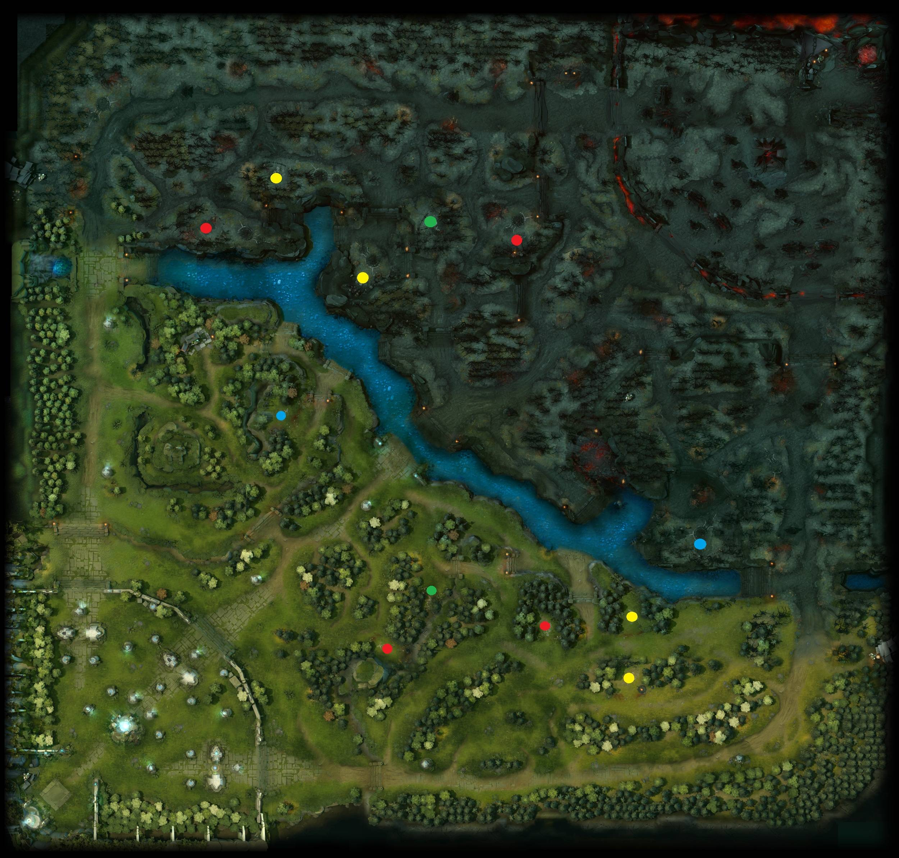
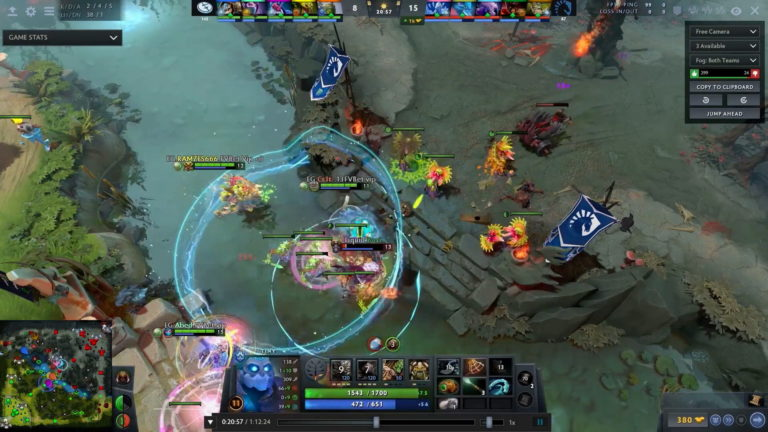

DOTO II BASIC MECHANIC FOR BEGINNERS
LAST HIT
Click the picture to learn more!
Last-hitting is one of the most important mechanics on DOTA 2.
It involves delivering the killing blow to enemy creeps as doing so will grant you XP and gold.
There are three types of creeps – melee creeps ranged/caster creeps and siege creeps.
Understanding each type of creep is essential to securing a lot of last-hits.
For instance, melee creeps have more health than caster creeps so you will have to wait
a little longer to get to the point where you’re able to secure a last-hit on a melee creep.
You should aim to get good at last-hitting, as your ability to consistently get
last-hits will determine, to a large extent, how well you’re able to farm in a match.
It involves delivering the killing blow to enemy creeps as doing so will grant you XP and gold.
There are three types of creeps – melee creeps ranged/caster creeps and siege creeps.
Understanding each type of creep is essential to securing a lot of last-hits.
For instance, melee creeps have more health than caster creeps so you will have to wait
a little longer to get to the point where you’re able to secure a last-hit on a melee creep.
You should aim to get good at last-hitting, as your ability to consistently get
last-hits will determine, to a large extent, how well you’re able to farm in a match.
MINIMAP

Most beginners view the mini-map as a gimmick, but trust us when we say it’s much more than
a box on your screen – it is one of DOTO 2’s core gameplay mechanics.
In a match, the minimap is your best friend. It gives you an insight into where enemy heroes
are and it allows you to predict their subsequent movements – without it, you’ll be a sitting duck.
Learning how to use the mini-map effectively will help you raise your skill level
faster than you can even imagine.
The information you’re able to get from the mini-map has a massive impact on your in-game decision
making, so you’d do well to focus on using the mini-map to its full potential.
a box on your screen – it is one of DOTO 2’s core gameplay mechanics.
In a match, the minimap is your best friend. It gives you an insight into where enemy heroes
are and it allows you to predict their subsequent movements – without it, you’ll be a sitting duck.
Learning how to use the mini-map effectively will help you raise your skill level
faster than you can even imagine.
The information you’re able to get from the mini-map has a massive impact on your in-game decision
making, so you’d do well to focus on using the mini-map to its full potential.
GANKING

Ganking essentially entails getting kills by throwing the odds in your favor.
It involves launching a coordinated attack in another lane during the laning phase
with the intent to kill an enemy hero.
It allows you to catch your enemies by surprise, thus giving you a better chance of
getting a kill. Ganking is not particularly difficult, but it’s not easy either.
You need to plan alongside your teammates and communicate with them to decide who will
initiate the gank and who your target is.
Make sure you choose your target wisely, in a bid to avoid ganking an enemy that you’ll
have a hard time taking down.
It involves launching a coordinated attack in another lane during the laning phase
with the intent to kill an enemy hero.
It allows you to catch your enemies by surprise, thus giving you a better chance of
getting a kill. Ganking is not particularly difficult, but it’s not easy either.
You need to plan alongside your teammates and communicate with them to decide who will
initiate the gank and who your target is.
Make sure you choose your target wisely, in a bid to avoid ganking an enemy that you’ll
have a hard time taking down.
HEROES SELECTION
There are currently 10 heroes on DOTO 2, all of which boast unique abilities and skillsets
that are tailored to particular roles.
There’s no need to be adept at using all the heroes in the game. Taking your time to gain an
in-depth understanding of just a few heroes is the best way to consistently gain MMR.
However, you need to make sure you understand your hero’s strengths and weaknesses in a bid to make
the most of them in a match.
that are tailored to particular roles.
There’s no need to be adept at using all the heroes in the game. Taking your time to gain an
in-depth understanding of just a few heroes is the best way to consistently gain MMR.
However, you need to make sure you understand your hero’s strengths and weaknesses in a bid to make
the most of them in a match.
ROLES
Nuker – Nukers are heroes that boast high-damage abilities. They serve as a major source of fire-power for teams,
killing heroes before team fights break out.
Carry – Carry heroes are expected to make significant contributions to a team in the late game as they typically
lack any real influence in the early game.
Junglers – Junglers are adept at farming neutral creeps in the early game.
Initiators – As the name suggests, initiators are heroes who initiate teamfights. They are typically
adept at large-scale battles.
Disablers – Disablers are heroes capable of effectively preventing enemies from using certain abilities.
They are useful in small skirmishes and team fights.
Escape – Escape heroes typically have high mobility and abilities that allow them and their teammates in
some cases, to escape team fights and ganks.
Support – Support heroes focus less on farming and more on protecting their teammates.
Pusher – Pushers are generally adept at destroying towers.
Durable – Durable heroes are heroes capable of sustaining high amounts of damage in team fights.
killing heroes before team fights break out.
Carry – Carry heroes are expected to make significant contributions to a team in the late game as they typically
lack any real influence in the early game.
Junglers – Junglers are adept at farming neutral creeps in the early game.
Initiators – As the name suggests, initiators are heroes who initiate teamfights. They are typically
adept at large-scale battles.
Disablers – Disablers are heroes capable of effectively preventing enemies from using certain abilities.
They are useful in small skirmishes and team fights.
Escape – Escape heroes typically have high mobility and abilities that allow them and their teammates in
some cases, to escape team fights and ganks.
Support – Support heroes focus less on farming and more on protecting their teammates.
Pusher – Pushers are generally adept at destroying towers.
Durable – Durable heroes are heroes capable of sustaining high amounts of damage in team fights.